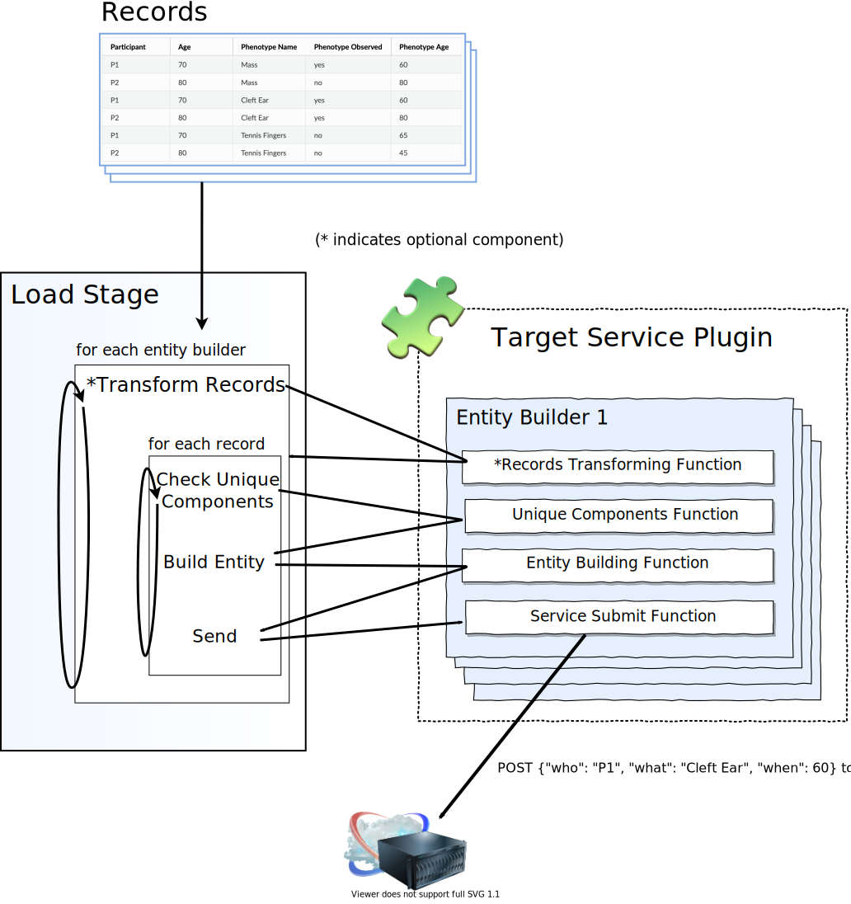

Load Stage Design¶
The load stage is responsible for taking your transformed data and sending it to the target service in the right format. It receives sets of records where each set contains all of the necessary values for populating a kind of entity in the target service, and it produces a series of service requests to make service additions or updates.
To do that, the Load stage feeds data records through a plugin interface that must be implemented for each target service.
Target service plugins implement the necessary routines for converting record data coming in from the previous stages into message payloads and also implement the logic for sending those payloads to the target service.
The plugin includes a builder class for each kind of entity that it wants to send to the target service.
Each builder class implements methods for the following behaviors:
(optional) Transform the given records list into whatever new record format the entity builder needs.
Compose the entity’s uniquely identifying primary elements.
This is used for querying a local cache or the target service to fetch the identifier of an existing entity that has the given values, if one exists, so that entities can be repeatably identified for updates. (Target services often don’t do this equivalent entity replacement themselves.)
Query the target service for the target identifier of the entity with the the same primary elements.
If no entry exists in the local cache, we have to query the target server for guidance so that entities can be repeatedly identified for updates.
Build a complete message payload that will be sent to the server to populate a new (or updated) entity of its type.
For more details, read Making a Target Service Plugin
A note on Unique Entity Identification
It may be easier to understand the concept and purpose of uniquely identifying components with an example.
Given the record:
STUDY.TARGET_SERVICE_ID |
PARTICIPANT.ID |
PARTICIPANT.AGE |
PARTICIPANT.SEX |
|---|---|---|---|
SD_12345678 |
P1 |
17 |
Male |
We might wish to compose a participant entity that looks like:
{
"study_id": "SD_12345678",
"external_id": "P1",
"age": 17,
"sex": "Male"
}
Because we know that every participant external ID is guaranteed to be unique
within a study and that age and sex are merely characteristic observations of
the participant that can be updated later, the uniquely identifying components
for this participant would be: {"study_id": "SD_12345678", "external_id":
"P1"}.
Any future corrections to the participant’s age or sex should be associated with the same entry. So how do we ensure that?
Let’s say that, after submission to the target service, the returned identifier
for the participant entity is: "PT_00001111". The ingest library will
internally create an association in a local cache file relating the unique key
components with the resulting target identifier like this:
participants |
|
|---|---|
Unique Components |
Target ID |
{“study_id”: “SD_12345678”, “external_id”: “P1”} |
PT_00001111 |
If the ingest library later encounters a record in the source data with the same unique components, it can:
Check the local cache for a known identifer.
If no related entry exists in the local cache, query the target service for the identifer of the entity with the same key values.
That way we can update characteristics of existing entities without knowing in advance how the target service identifies them, and it should always be safe to erase the local cache at the expense of performance (additional network roundtrips).